실제 로컬 화면(같은 시험 데이터)에 바꿀 CSS 만 덧씌워 찍었다. 코드는 아직 그대로다. 진단 목록: docs/design/redesign-2026-10-18-audit.md, 값: docs/design/tokens.md 0절.
배너 칸이 사진보다 나중에 그려져 사진 위쪽 절반을 덮는다. 사진을 배너 위 층으로 올린다.
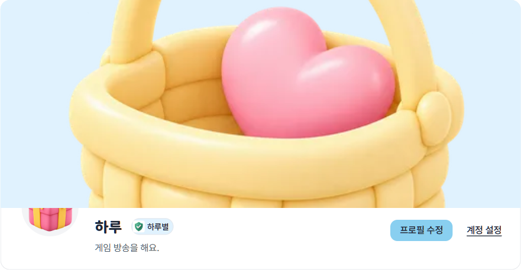
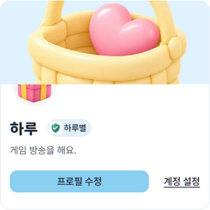
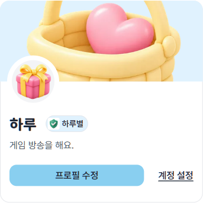
「팔로우하고 선물 보내기」가 머리와 아래 판에 두 번 나오고, 아래 판 제목 「선물 보내기」(32)가 이름과 크기가 같다. 아래 판을 빼고, 로그인 후에도 로그인 전과 같은 880 한 기둥으로.
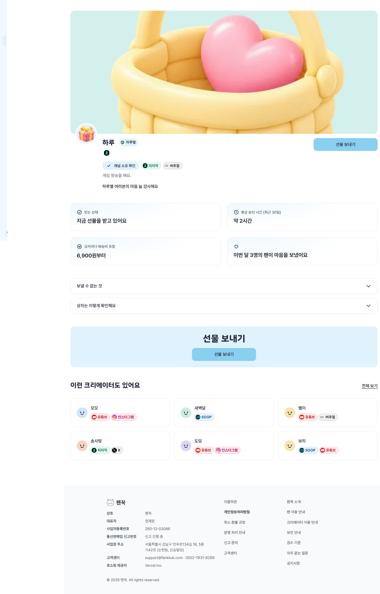
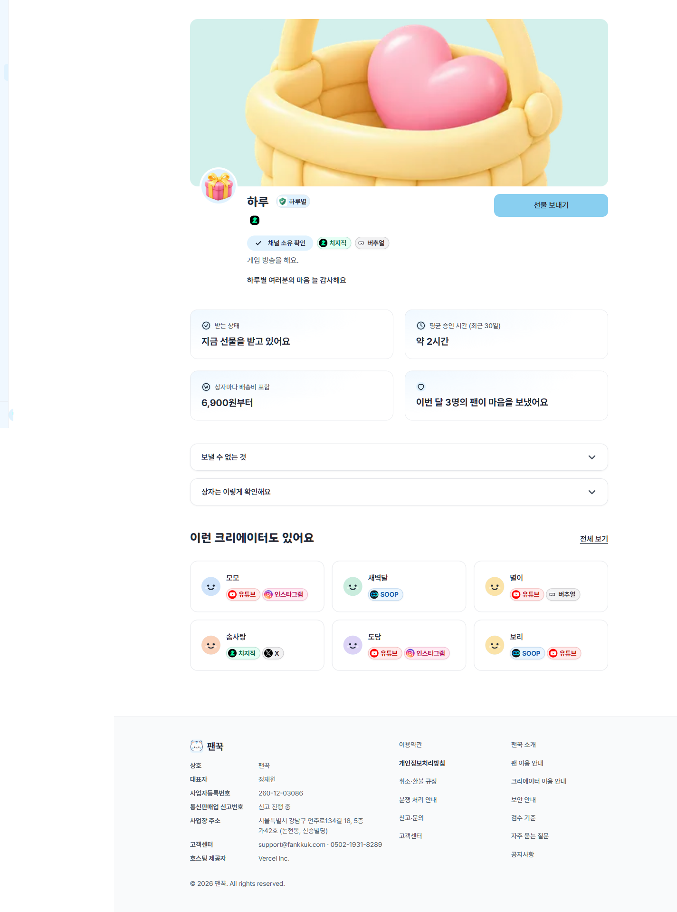
「안전하게 선물을 나눠봐요」가 첫 화면 제목과 같은 48이라 제목이 둘처럼 보인다. 48 은 첫 화면 제목 하나에만.
PC 카드를 그대로 세로로 쌓아 4단계만 약 1,400px. 그림 왼쪽·글 오른쪽 목록으로 바꾸면 약 900px. 문구는 그대로다.
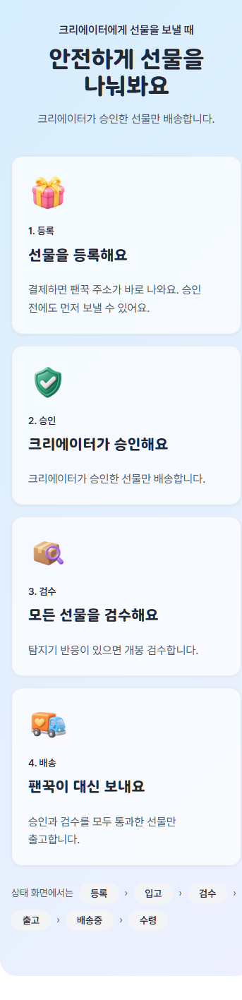
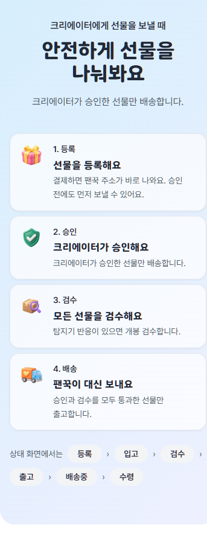
둘 다 왼쪽 카드에 마우스를 올린 상태다. 지금은 테두리 색만 짙어지고, 바꾼 뒤에는 2px 떠오르며 그림자가 생긴다. 평소에는 테두리 1px 하나(그림자 없음).
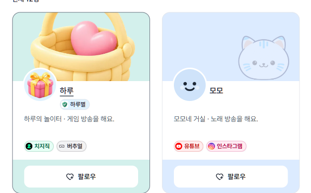
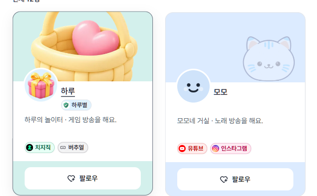
지금 버튼은 색이 즉시 바뀌고 눌러도 반응이 없다. 바꾼 뒤: 색은 0.15초에 걸쳐 바뀌고, 누르면 98%로 살짝 작아진다. 움직임 줄이기 설정을 켠 기기에서는 움직이지 않는다.
한 화면에 반경이 다섯 가지(끝까지·24·16·12·8)라 태그를 칩과 같은 알약 모양으로 합친다. 그러면 24·16·12 세 단계.
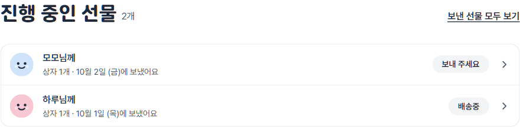
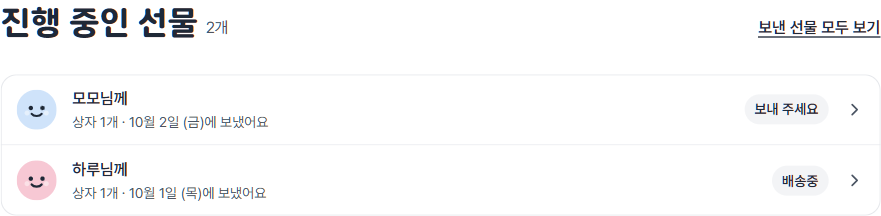
푸터 링크는 높이 22라 손가락으로 누르기 어렵다. 링크 사이 간격(16)을 없애고 각 줄을 44로 — 전체 길이는 거의 그대로. 내 정보 화면의 작은 버튼(36)·스위치도 44.
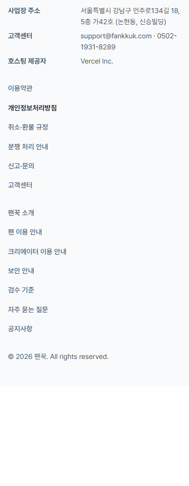
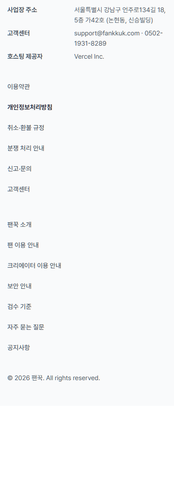
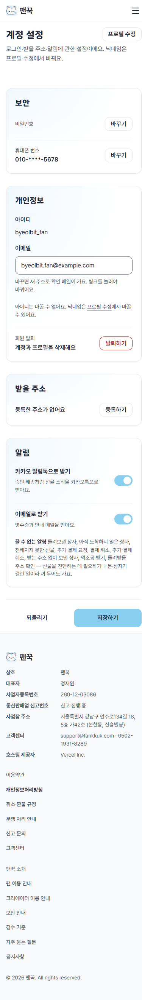
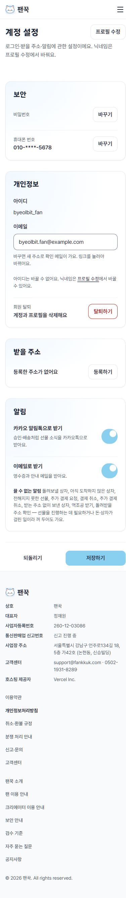
지금은 Next 기본 화면(영어, 상단 바·푸터 없음)이 뜬다. 팬꾹 틀 안에 마스코트 + 한 줄 + 「홈으로」. 문구는 초안 — 용어집에 없는 개념이라 승인 뒤 용어집에 먼저 올린다. 서버 오류 화면도 같은 모양으로.
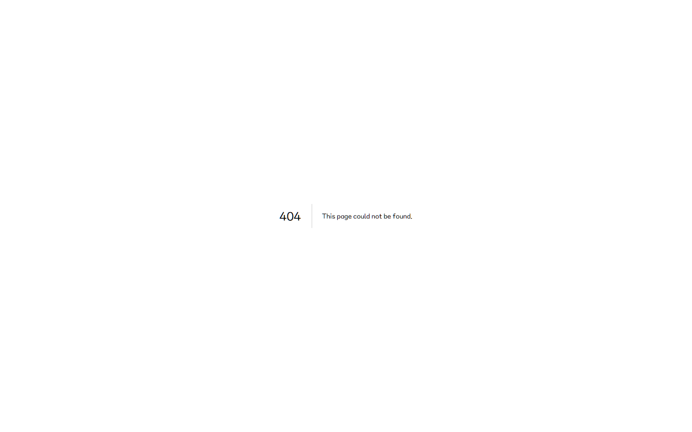
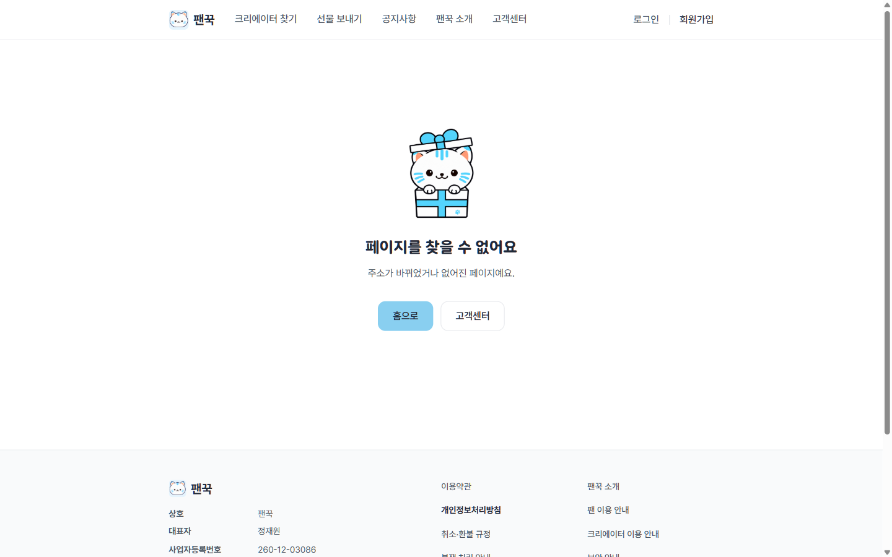
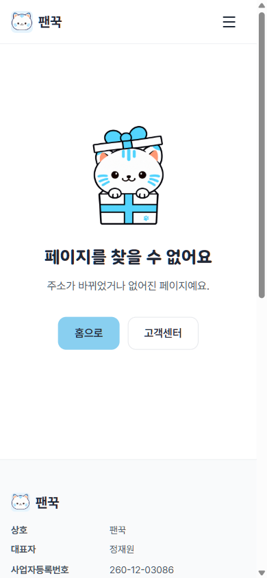